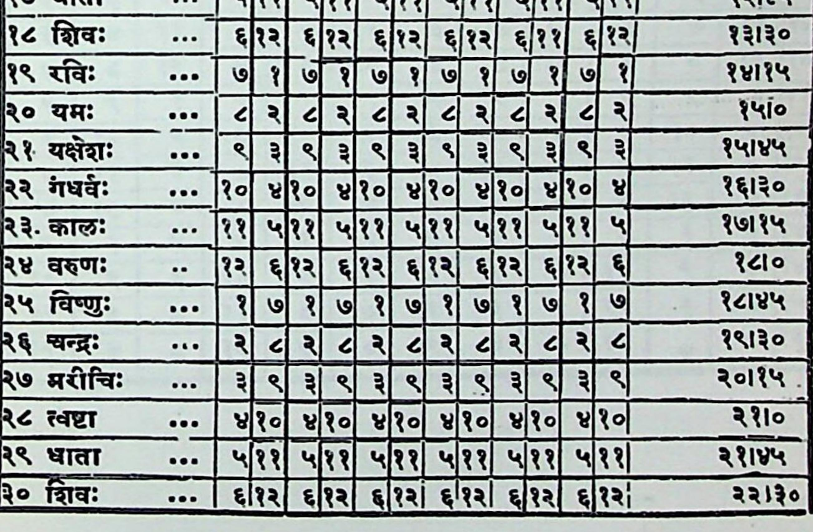

नाबाटीक्ासदहितः । ( १३) खवेद्शचक्रय् ॥ ऋ 11 न रस र क्छ --[१ज१यदजवरजवरजबन् शण्ड र चन्द्रः _--“ || <| २| < | < २।२० _ ५ पगम २।१५ ` ४ त्वा "| मुह ५ म २२२ य २।० । ५ धाता ५।११| ५ ५।११ २।४५ ६ शिवः --. \ ६।१२| ६।१२ ~ _ ० ७ रविः "७१७९।५७।१७ १७| १/७ १ < यमः ,==।4२।८>।८२। ८ २। 4 २ < श | ९ यक्षेशः ...|९।३।९/३|९|३।९। ३ र | १० गधर्वः ..* [१०| ४।१०| ४।१०| ४|१०| ४१० ४[१०| ४ एकक ~ (मवु वप् प्र मश्व 1२ कणः ~~ (ए वु व इ विषयः --- [जरम नरज १४चन्द्ः = २|८२।५२८५२।८२।५२। 4 १० नयोकः -- {अयु इय् घु स् २३२ ११।१५ १९ तथ =. [र अ अ १० बाता _ | नात् प वप ११
